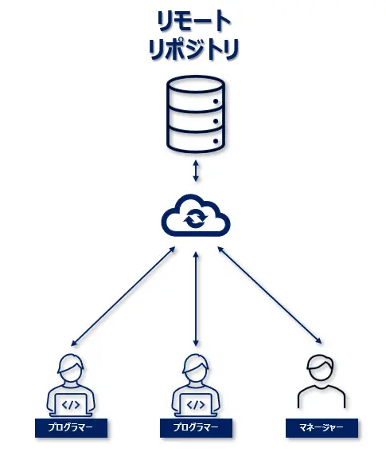
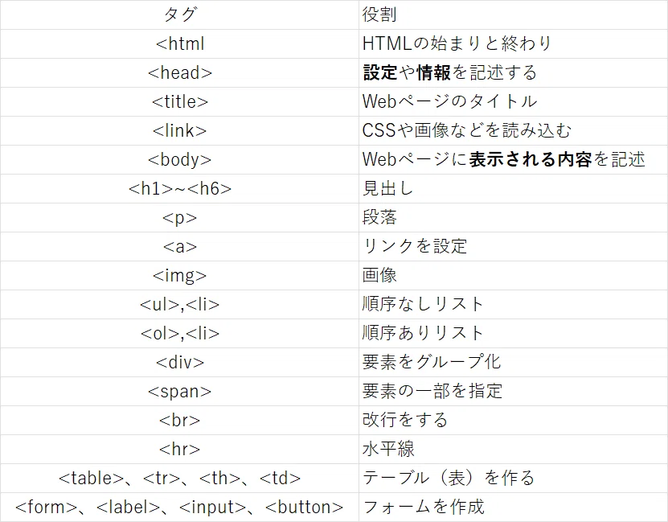

分散型バージョン管理システム
言い換えると...ファイルのバージョン（履歴）管理が簡単にできるツール
メリット
・以前のバージョンにファイルを戻せる・複数人で同じファイルを編集して、それを統合できる
・履歴を複数人で共有できる
リポジトリについて
Gitを知る上で必ず覚えておく必要があるのが、「リポジトリ」という言葉
ファイルや履歴を保存するためのストレージのことで、簡単に言うと保管庫のようなもの
・リモートリポジトリ（webサーバー上に存在）
・ローカルリポジトリ（ローカルのPC上に存在）

基本の4つのアクション
「add」「commit」「pull」「push」
HTMLとは？
1.HTMLの基本
HTMLはWebページの構造や内容を作るためのマークアップ言語
見出し、文章、画像、リンクなどの役割をタグで指定し、ブラウザにページの内容を伝える
2.HTMLの基本構造
HTMLはタグを組み合わせて作る
3.よく使うタグ

タグを使い分けることで内容が整理され、読みやすいwebページになる